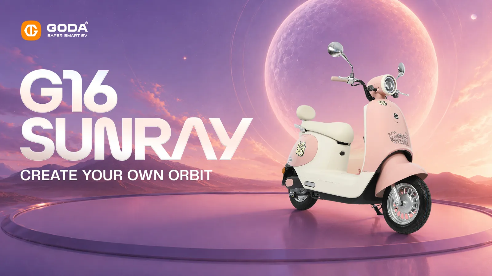

GODA Sunray.Retro, 800 W, sampai 50 km/jam.
Sunray (G16) masuk lini Galactic Series GODA. GODA meluncurkannya pada 2 September 2026. Ini ringkasan kami, dengan harga dan test ride di Moto Ijo.

Desain.
Bentuk Sunray retro, dengan detail modern. Ukurannya ringkas. GODA memberi empat warna pastel: Blush Pink, Red Plum, Mint Sky, dan Sunny Yellow.
Joknya punya sandaran punggung yang empuk. Bagasi di bawah jok cukup luas untuk belanjaan harian.
Tenaga dan baterai.
Motornya 800 W. Ada tiga mode kecepatan: 33 km/jam, 40 km/jam, dan 50 km/jam. Jarak tempuhnya sampai 50 km, menurut GODA.
Baterainya 48V 20Ah jenis SLA (aki timbal-asam). SLA lebih berat dari lithium, tetapi harganya lebih rendah. Baca beda lithium dan SLA di blog GODA.
Fitur harian.
Kunci NFC: motor menyala tanpa anak kunci. Speedometernya digital. Lampu depannya LED. Spionnya dari baja tahan karat.
Mode mundur membantu saat parkir. Sunray juga membawa Smart Go System (SGS) dan Safe Drive System (SDS), dua sistem pintar dari GODA.
Data ringkas.
| Hal | GODA Sunray G16 |
|---|---|
| Motor | 800 W |
| Kecepatan | 33, 40, atau 50 km/jam (tiga mode) |
| Baterai | SLA, 48V 20Ah |
| Jarak tempuh | Sampai 50 km |
| Ban | 2.75-10 depan, 3.00-10 belakang |
| Warna | Blush Pink, Red Plum, Mint Sky, Sunny Yellow |
Sepeda listrik atau motor?
GODA menyebut Sunray sepeda listrik. Kecepatan maksimumnya 50 km/jam. Itu di atas batas 25 km/jam untuk sepeda listrik dalam PM 45 Tahun 2020.
Status ini menentukan SIM dan STNK. Baca panduan kami, atau tanya statusnya lewat WhatsApp.
Cocok untuk siapa.
Sunray cocok untuk perjalanan pendek di dalam kota. Contohnya ke kantor, kampus, pasar, minimarket, atau sekolah anak.
Harga di Moto Ijo.
Rp 6.599.000, menurut daftar harga Moto Ijo per 31 Oktober 2026.
Kamu bisa mencicil lewat Kredivo, Shopee PayLater, atau BSI Hasanah Card. Contohnya, dengan DP 20% (Rp 1.319.800) dan tenor 12 bulan, cicilan lewat Kredivo sekitar Rp 601.626 per bulan. Lewat BSI Hasanah Card (cicilan 0%), sekitar Rp 439.933 per bulan, belum termasuk ujrah kartu. Angka akhir dari penyedia cicilannya. Hitung cicilan Sunray.
Test ride gratis setiap hari, pukul 09.00 sampai 15.00, di showroom kami di Palmerah.
Sumber.
- GODA Indonesia, "GODA G16 Sunray Resmi Meluncur, Sepeda Listrik Stylish dengan Motor 800 Watt", 2 September 2026. godaindonesia.com/post/goda-sunray-resmi-meluncur-sepeda-listrik-stylish-dengan-motor-800-watt
- Gambar: GODA Indonesia.
- Batas kecepatan sepeda listrik: PM 45 Tahun 2020, Pasal 3 ayat 2. peraturan.bpk.go.id/Download/141506/PM_45_TAHUN_2020.pdf
- Harga dan cicilan: daftar harga Moto Ijo, 31 Oktober 2026.